Mach-O
通用二进制(Universal binary)文件
macOS 系统一路走来，支持的 CPU 及硬件平台都有了很大的变化，从早期的 PowerPC 平台，到后来的 x86，再到现在主流的 arm、x86-64 平台。软件开发人员为了做到不同硬件平台的兼容性，如果需要为每一个平台编译一个可执行文件，这将是非常繁琐的。
为了解决软件在多个硬件平台上的兼容性问题，苹果开发了一个通用的二进制文件格式（Universal Binary）。又称为胖二进制（Fat Binary），通用二进制文件中将多个支持不同 CPU 架构的二进制文件打包成一个文件，系统在加载运行该程序时，会根据通用二进制文件中提供的多个架构来与当前系统平台做匹配，运行适合当前系统的那个版本。
有人或许会好奇，不是讲 Mach-O 文件吗?怎么开始讲通用二进制文件，不要着急，看下面 file 命令查看 dyld 的打印，universal binary 前面不就是 Mach-O 吗
苹果自家系统中存在着很多通用二进制文件。比如 /usr/lib/dyld，在终端中执行 file 命令可以查看它的信息：
1 | ~/ file /usr/lib/dyld |
我们创建一个名为 test 的 iOS 工程，然后在 Xcode 中通过设置 Build Settings 中的 Architectures 来生成兼容各种架构的 APP
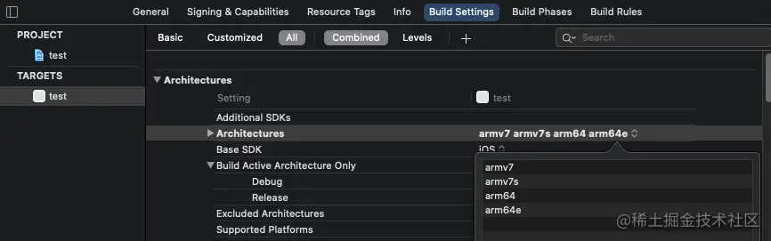
编译之后，使用 file 命令查看生成的 ipa 包里的可执行文件
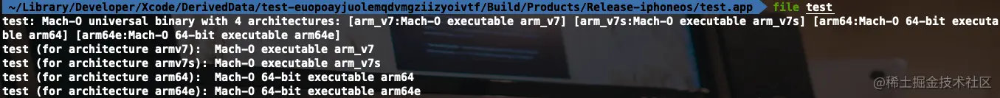
lipo
系统提供了一个命令行工具lipo来操作通用二进制文件。它可以添加、提取、删除以及替换通用二进制文件中特定架构的二进制版本。
查看通用二进制文件信息：
1 | lipo -info test |
提取 test 中 armv7 版本的二进制文件可以执行：
1 | lipo test -extract armv7 -output test_armv7 |
提取 test 中 arm64 版本的二进制文件可以执行：
1 | lipo test -extract arm64 -output test_arm64 |
合并 test_armv7 和 test_arm64：
1 | lipo -create test_armv7 test_arm64 -output test0 |
删除 test 中 armv7s 版本的二进制文件可以执行：
1 | lipo test -remove armv7s -output test1 |
通用二进制的”通用”不止针对可以直接运行的可以执行文件，系统中的动态库 .dylib 文件，静态库 .a 文件以及 Framework 等都可以是通用二进制文件，对它们同样也可以使用 lipo 命令来进行管理
接下来打开我们的 Xcode，按 command + shift + o 输入 mach-o/fat.h 就可以看到对通用二进制文件格式的声明，从文件的命名和声明来看，将通用二进制叫作胖二进制或许更合适。胖二进制的头部定义如下：
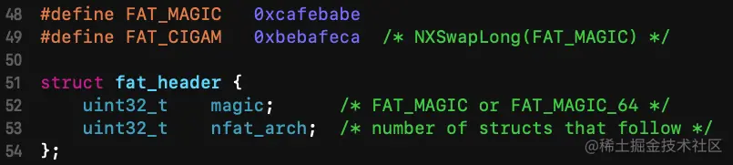
magic 字段被定义为常量 FAT_MAGIC，它的取值根据架构是固定的，在 32 位架构上是 0xcafebabe，在 64 位架构上是 0xcafebabf，表示这是一个通用二进制文件。这里要说一下字节序，计算机硬件有两种储存数据的方式，分别为大端字节序，和小端字节序，大端字节序：高位字节在前，低位字节在后，这是人类读写数值的方法。小端字节序：低位字节在前，高位字节在后，是大多数机器读取数据的方式。下图所示的是同一个数字 01234567 在大端和小端下的存储方式
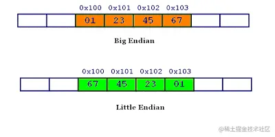
nfat_arch 字段表示后面的 Mach-O 文件的数量
每个通用二进制架构信息都使用 fat_arch 结构体表示，在 fat_header 结构体之后，紧接着的是一个或多个连续的 fat_arch 结构体，它的定义如下：
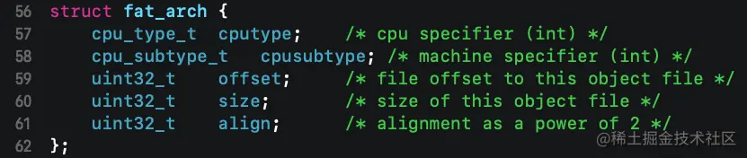
cputype字段是 cpu 说明符，类型是cpu_type_t，定义在<mach/machine.h>文件，使用同样的 command + shift + o 然后输入头文件的方法可以打开 <mach/machine.h> 文件，在 macOS 上取值一般为 CPU_TYPE_I386 或 CPU_TYPE_X86_64，在 iOS 平台上一般是 CPU_TYPE_ARM 或 CPU_TYPE_ARM64
cpu_subtype 字段是机器说明符，类型是 cpu_subtype_t，同样定义在 <mach/machine.h> 文件，macOS 上一般是 CPU_SUBTYPE_I386_ALL，CPU_SUBTYPE_X86_64_ALL，在 iOS 上一般则是 CPU_SUBTYPE_ARM64_ALL，CPU_SUBTYPE_ARM_V7
offset 字段指明了当前 Mach-O 数据相对于当前文件开头的偏移值
size 字段指明了数据的大小
align 字段指明了数据的内存对齐边界，取值必须是 2 的 n 次方，它确保了当前 cpu 架构的目标文件加载到内存中时，数据是经过内存优化对齐的
使用 MachOView 可以十分清楚的看到这些信息
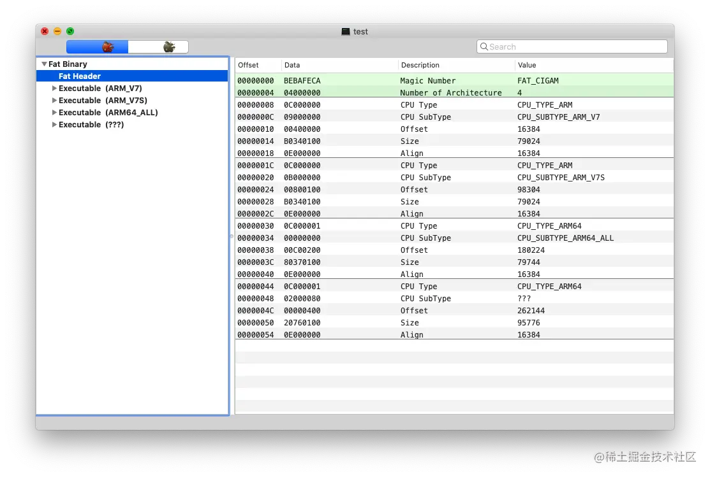
在 fat_arch 结构体往下就是具体的 Mach-O 格式文件了，它的内容复杂得多，将在下一小节进行讨论。
Mach-O
简介
Mach-O（Mach Object file format）是一种文件格式，用于在 macOS、iOS 以及其他基于 Mach 内核的操作系统上保存可执行文件、目标文件、动态库和内核转储。Mach-O 格式是这些系统上程序的核心组成部分，存储了程序运行所需的所有信息，比如代码、数据、符号表、调试信息等。
熟悉 Mach-O 文件格式，有助于了解苹果软件底层运行机制，更好的掌握 dyld 加载 Mach-O 的步骤，为自己动手开发 Mach-O 相关的加解密工具打下基础
- MacOS 上的可执行文件是一种 Mach-O 文件(比如 ruby，phtyon…)，但不是所有可执行文件都是 Mach-O 文件
- 库文件是一种 Mach-O 文件，动态库 .dylib，静态库 .a，还有 Framework 都是一种 Mach-O 文件
- .o 文件(clang 编译 c 源文件得到的)也叫目标文件夹，是一种 Mach-O 文件
- .dsym 文件(符号表)也是一种 Mach-O 文件
- dyld 是可执行文件，自然也是一种 Mach-O 文件
以上这些都属于 Mach-O 文件，当然除了以上这五种，还有其他类型的 Mach-O 文件，只是这五种比较常见…其他还有八种，其他八种会在下面对 Mach-O 文件结构的介绍中提到
从上面 MachOView 的截图中可以看到，test 文件内有 4 种不同架构的文件，每种架构的文件都可以称它为一个 Mach-O 文件，而刚刚所讲的通用二进制文件就是一个文件如果包含了 1 种以上的 Mach-O 文件，那么他就是通用二进制文件
我们知道了 Mach-O 文件就是一堆有着特定结构的二进制数据，那么我们如何从这一堆的二进制里获取我们所需要的数据?如果做过股票行情 APP，IM 通讯底层 SDK 或者说使用过 socket 长连接对二进制数据进行过处理，发送，接收的同学，一定会知道对一堆的二进制如何有效的处理，提取我们想要的数据的。以我曾经做过的一款股票行情软件为例，里面就定义了大量的结构体类型，用结构体来对二进制数据进行解析，得到我们想要的数据，那么这个 Mach-O 文件的解析有没有对应的结构体呢?
当然有，在 Xcode 中使用 command + shift + o 搜索 mach-o/loader.h 就会发现一堆的结构体，这些结构体都是系统用来解析 Mach-O 文件的，我们也能从中获取到不少的信息
结构
一个典型的 Mach-O 文件结构如下图所示：
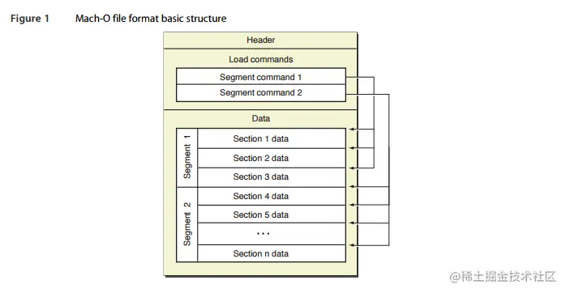
从图中可以了解到一个 Mach-O 文件的结构包括 Header，Load commands 和 Data
- Header：描述了 Mach-O 的 cpu 架构、文件类型以及加载命令等信息。
- Load commands：指定文件的逻辑结构和文件在虚拟内存中的布局。
- Data：原始段数据。每个段 Segment 都有一个或多个 Section，它们存放了具体的数据。
Header
可以使用 otool 命令来查看 Mach-O 文件的头部信息
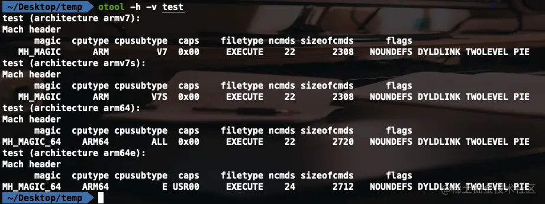
这个部分的定义，可以通过在 Xcode 中，按 command + shift + o 输入 mach-o/loader.h 的方式找到
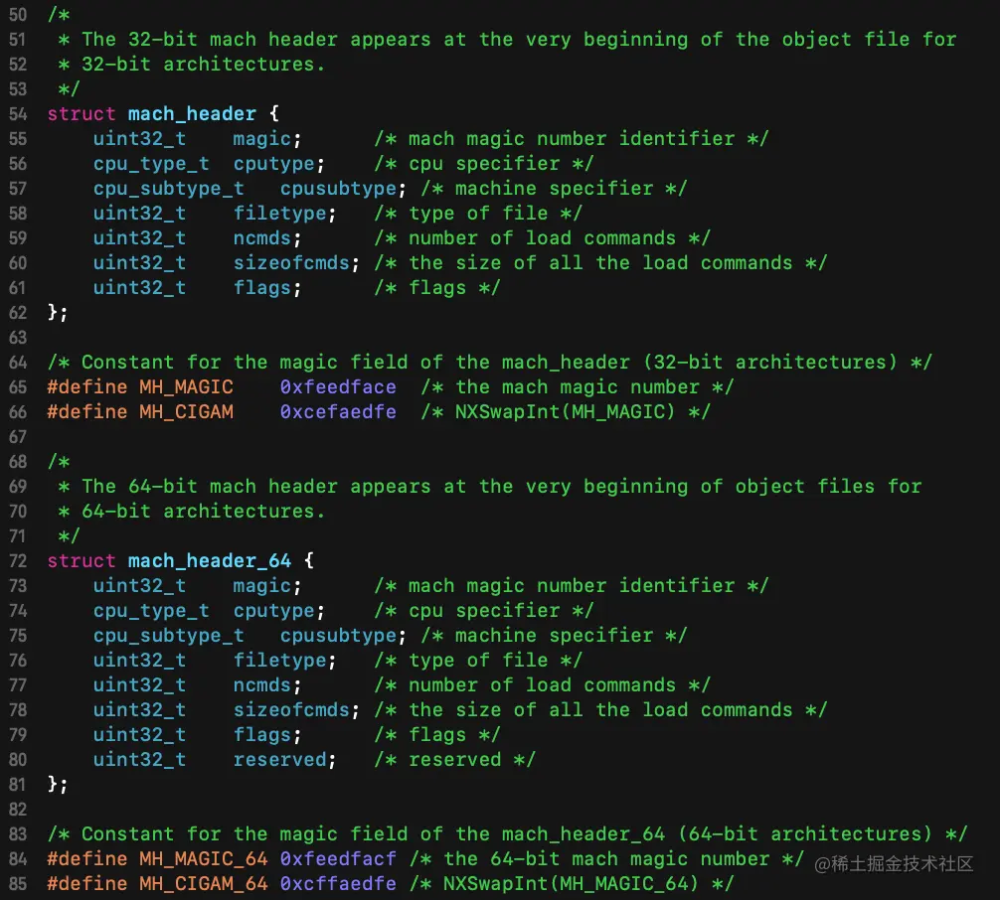
magic在截图中都能看到的宏定义，对 32 位架构的程序来说，它的值就是 0xfeedface，可以使用 MH_MAGIC 宏代替。对 64 位架构的程序来说，它的值就是 0xfeedfacf，对应的宏 MH_MAGIC_64cputype和上一节中所讲的 fat_header 结构体的含义完全相同cpusubtype同上filetype表示 Mach-O 文件的具体类型，值有下图所示的12种，常见的有 MH_EXECUTE(可执行文件)，MH_DYLIB(动态库)，MH_DYLINKER(动态连接器)，MH_DSYM(符号表文件)
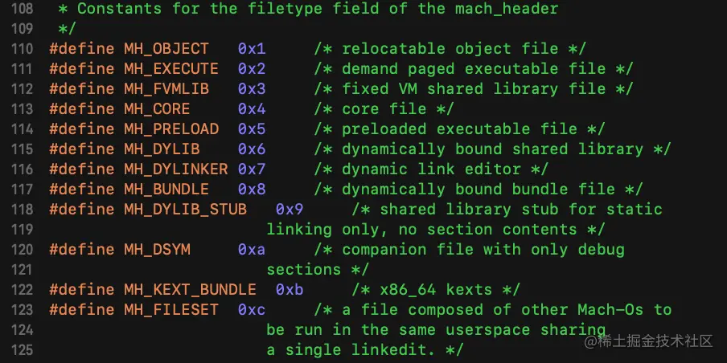ncmdsload commands 的数量sizeofcmds所有 load commands 的占的字节数flags标记，值比较多，最好去头文件中查看详细说明
1 |
|
reserved这个字段只在 64 位架构的 Mach-O 文件中才有，目前它的取值系统保留
使用 MachOView 查看 Header 的信息
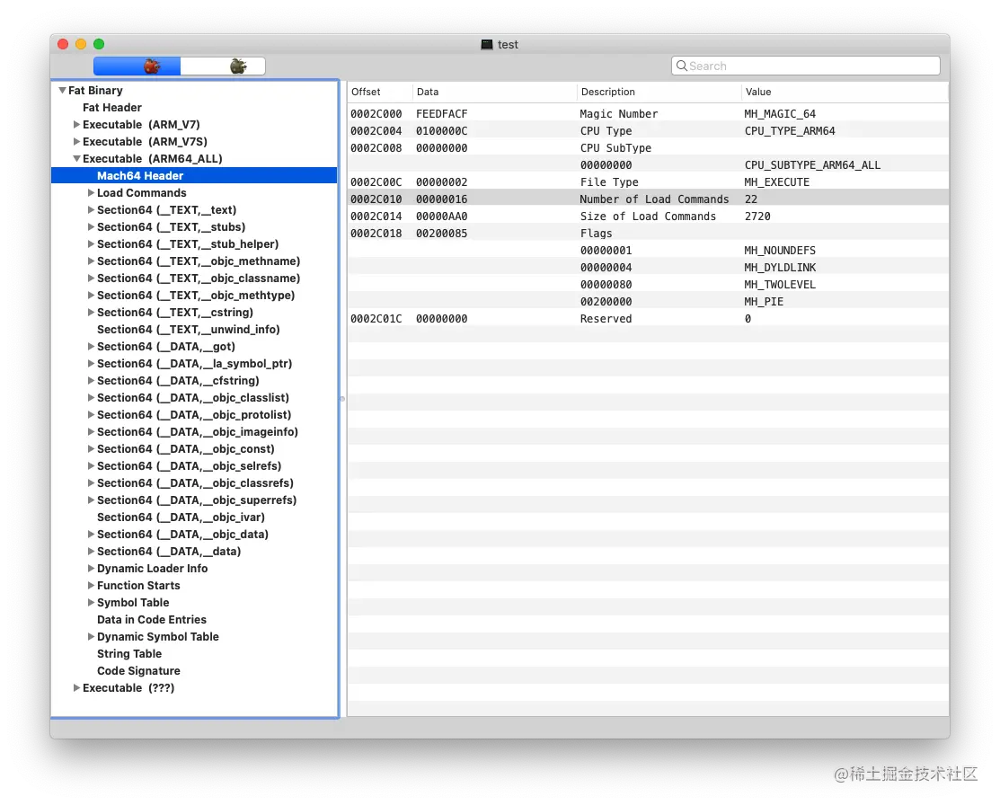
Load Commands
Load Commands 描述的是文件的加载信息，加载信息有很多，加载的段、符号表、动态库信息等都在 Load Commands 中取到。这个部分信息还是比较有用的，我们可以从这里获取到符号表和字符串表的偏移量，下文中会有详细的解释。
Load Commands 加载命令紧跟在 Header 之后，所有加载命令的前两个字段必须是 cmd 和 cmdsize，cmd 字段用该命令类型的常量填充，头文件中定义了许多的宏用于该字段，每个命令类型都有一个特定的结构。cmdsize 字段是以字节为单位的特定加载命令结构的大小，再加上它后面作为加载命令一部分的任何内容（即节结构、字符串等）要前进到下一个加载命令，可以将 cmdsize 加上当前加载命令的偏移量
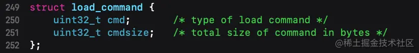
cmd 字段的取值有目前有 50 多种，太多了就不全部粘贴出来了…
1 |
|
所有的这些加载命令由系统内核加载器直接使用，或由动态链接器处理。其中几个常见的加载命令有LC_LOAD_DYLIB、LC_SEGMENT、LC_MAIN、LC_CODE_SIGNATURE、LC_ENCRYPTION_INFO等，下面介绍其中的几个
LC_LOAD_DYLIB
LC_LOAD_DYLIB：表示这是一个需要动态加载的链接库。它使用 dylib_command 结构体表示。定义如下：
1 | struct dylib_command { |
当 cmd 类型是LC_ID_DYLIB，LC_LOAD_DYLIB，LC_LOAD_WEAK_DYLIB，LC_REEXPORT_DYLIB时，都使用 dylib_command 结构体表示。其中 dylib 结构体存储要加载的动态库的具体信息如下
1 | struct dylib { |
name 字段是链接库的完整路径，动态链接器在加载库时，通用此路径来进行加载它。timestamp字段描述了库构建时的时间戳current_version与compatibility_version指明了前当版本与兼容的版本号
如果你看了我的上一篇文章 代码注入 里面提到了 yololib，这个工具的原理基本就是利用这条 LC_LOAD_DYLIB 加载命令的相关信息实现的
LC_MAIN
LC_MAIN：此加载命令记录了可执行文件的主函数 main() 的位置。它使用 entry_point_command 结构体表示。定义如下：
1 | struct entry_point_command { |
entryoff 字段中就指定了 main() 函数的文件偏移。stacksize 指定了初始的堆栈大小。
LC_SEGMENT/LC_SEGMENT_64
LC_SEGMENT/LC_SEGMENT_64：段加载命令，描述了 32 位或 64 位 Mach-O 文件的段的信息，常见的段有 __PAGEZERO，__TEXT，__DATA，__LINKEDIT。
__PAGEZERO 是一个空段，它位于文件起始段的位置
__TEXT 和 __DATA 分别是文本段和数据段，分别存储了代码信息和数据信息
__LINKEDIT 是链接信息段。段(segment)又可以细分为section，每个段(segment)可以包含多个section
段使用 segment_command 结构体来表示，它的定义如下：
1 | struct segment_command { /* for 32-bit architectures */ |
segname 字段是一个 16 字节大小的空间，用来存储段的名称，比如__TEXT…
vmaddr 字段指明了段要加载的虚拟内存地址
vmsize 字段指明了段所占的虚拟内存的大小
fileoff 字段指明了段数据所在文件中偏移地址
filesize 字段指明了段数据实际的大小
maxprot 字段指明了页面所需要的最高内存保护
initprot 字段指明了页面初始的内存保护
nsects 字段指明了段所包含的节区（section）
flags 字段指明了段的标志信息
还有很多 Load Commands 加载命令，这里就不一一介绍了…贴一张图大概了解下
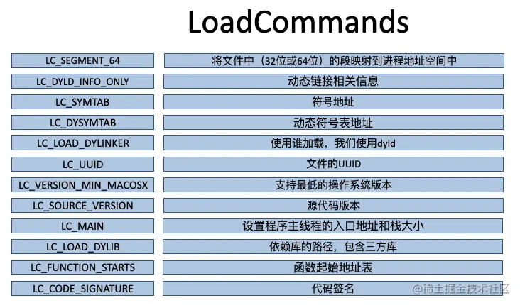
使用 MachOView 查看 Load Commands 的内容
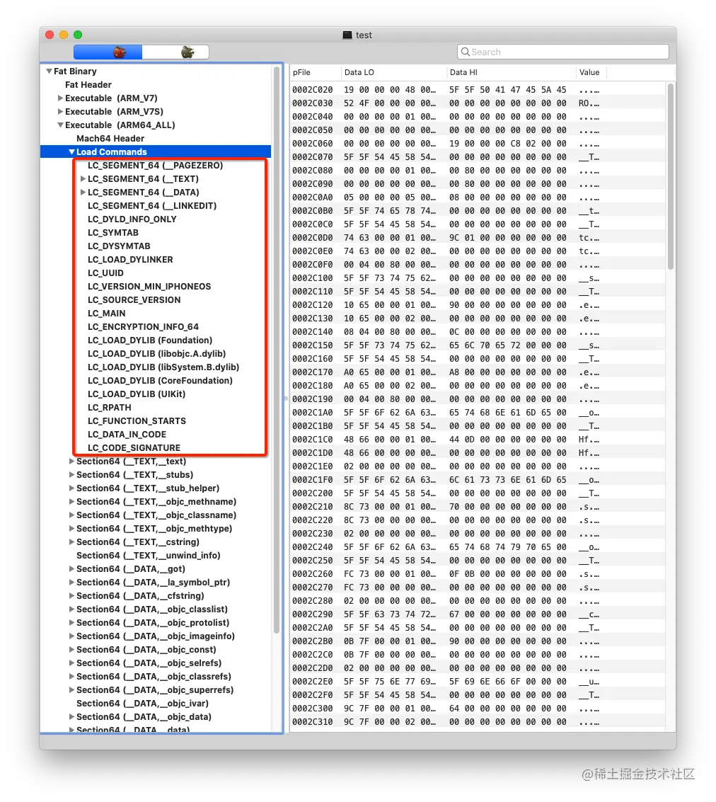
Data
数据区，除了 Header 和 Load Commands 外所有的原始数据。Load Commands 是对数据的汇总概括，而数据区则是真实的数据。Load Commands 与数据区的关系就像书的目录与章节的关系，如图所示，Segment 为 __TEXT 的段里，显示有 8 个 section，每个 section 具体的内容就在 Data 区里了
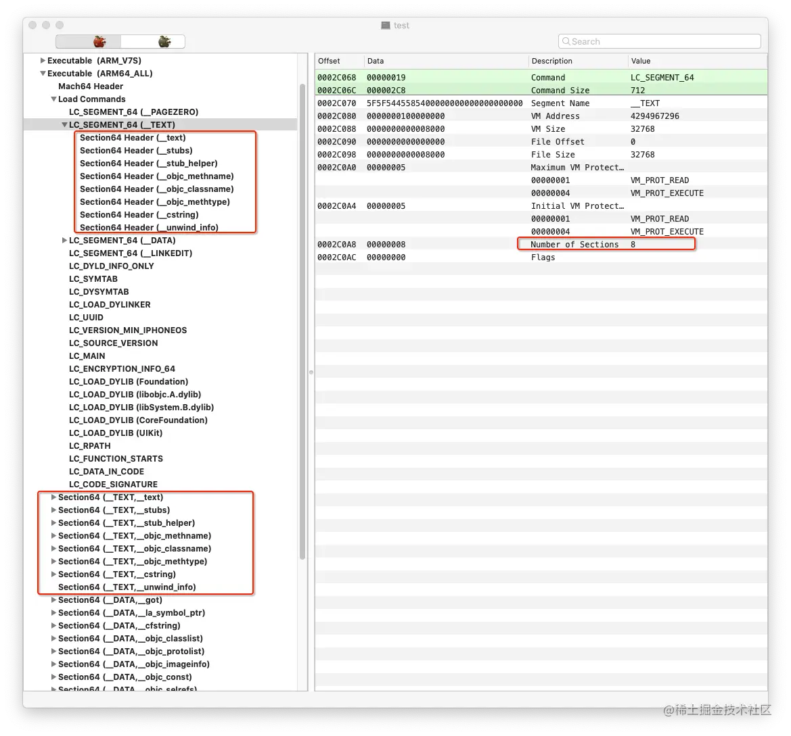
接下里介绍几个比较重要的 section
(__TEXT，__text)
这里存放的是汇编后的代码，当我们进行编译时，每个 .m 文件会经过预编译->编译->汇编形成 .o 文件，称之为目标文件。汇编后，所有的代码会形成汇编指令存储在 .o 文件的 (__TEXT，__text) 区（（__DATA，__data）也是类似）。
链接后，所有的 .o 文件会合并成一个文件，所有 .o 文件的 (__TEXT，__text) 数据都会按链接顺序存放到应用文件的 (__TEXT，__text) 中。
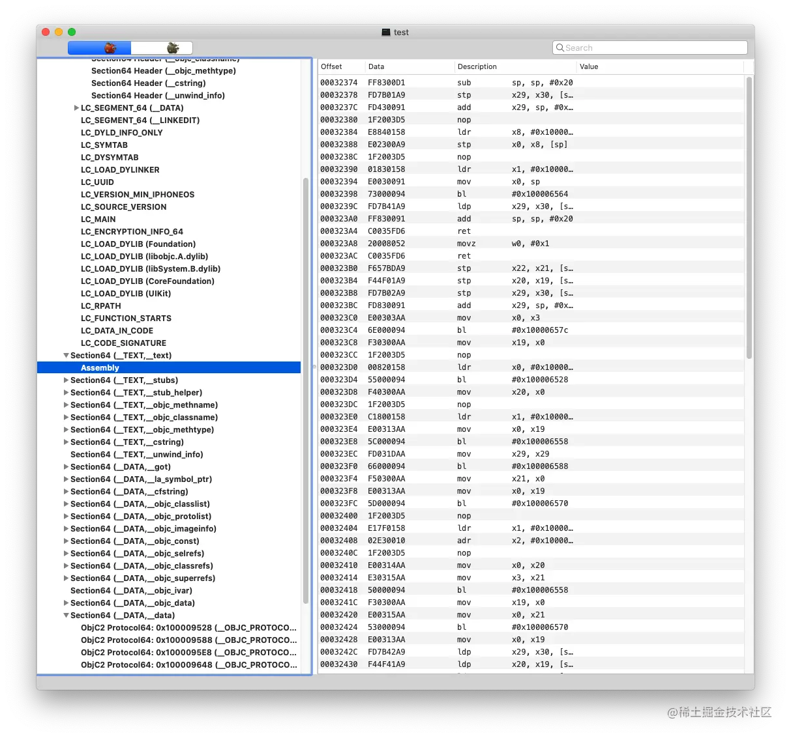
(__TEXT，__objc_methname)
这里存放了项目里，所有我们用 Objective-C 写的方法名
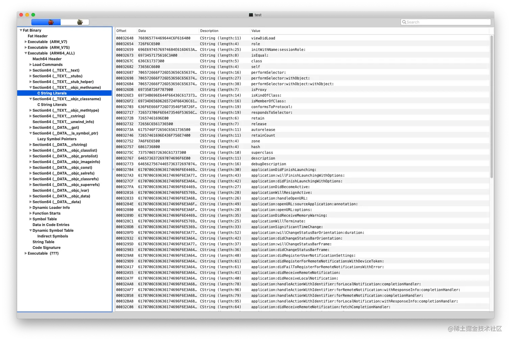
(__TEXT，__objc_classname)
这里存放了项目里所有 Objective-C 类的名字
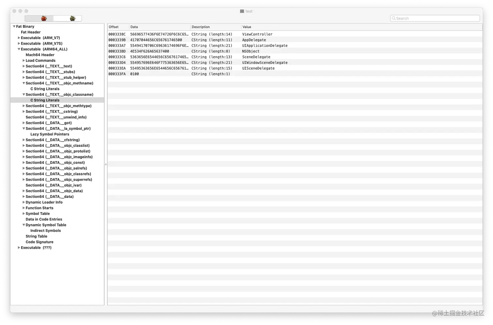
class-dump 工具能够解析出每个类的方法，属性，成员变量，应该就是来自上面两个 section 的数据了，当然这只是我的猜测，具体怎么实现的就要去看 class-dump 的源码了
Symbol Table
符号表，这个是重点中的重点，符号表是将地址和符号联系起来的桥梁。符号表并不能直接存储符号，而是存储符号位于字符串表的位置。
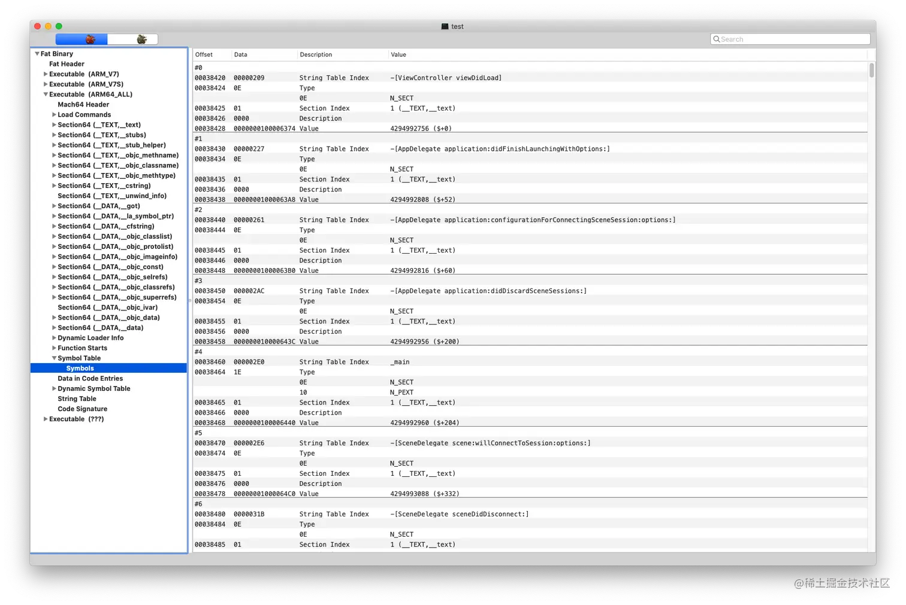
String Table
字符串表所有的变量名、函数名等，都以字符串的形式存储在字符串表中。
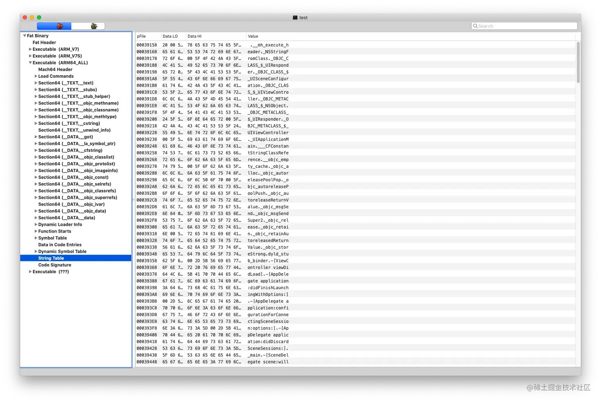
Dynamic Symbol Table
动态符号表存储的是动态库函数位于符号表的偏移信息。(__DATA，__la_symbol_ptr) section 可以从动态符号表中获取到该 section 位于符号表的索引数组。动态符号表并不存储符号信息，而是存储其位于符号表的偏移信息。Fishhook 源码看起来比较复杂主要是因为 hook 的是动态链接的函数，索引和链接关系比较绕。但是我们自己编写的 C 函数不是动态链接的，而是在编译链接后代码指令就存储在文件内部的函数，因此不会用到动态符号表也就无法 hook。
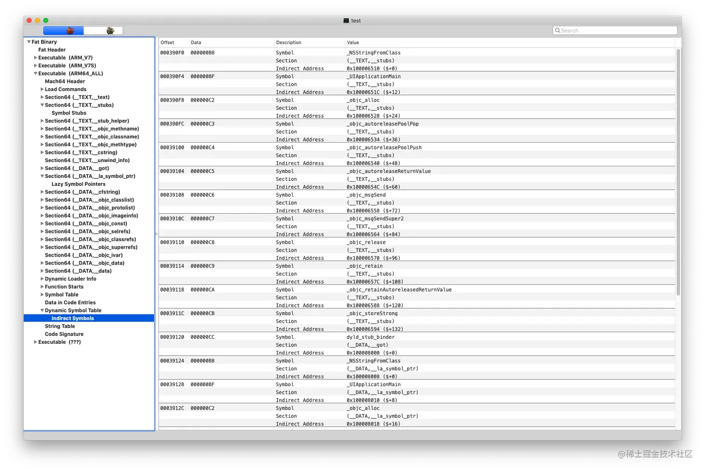
当然，关于 Mach-O 文件的知识远不止这么点，但是要完全讲清楚里面的所有内容，那估计不是这么一篇文章能够讲的清楚的，至少也得是一本书了，我也只是网上收集到的一些资料，自己写了篇总结而已
Mach-O 的应用
class-dump 这个工具就是通过对 Mach-O 文件的解析得到的结果。